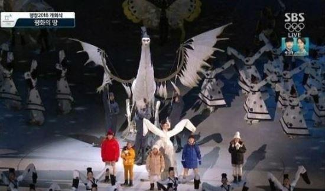
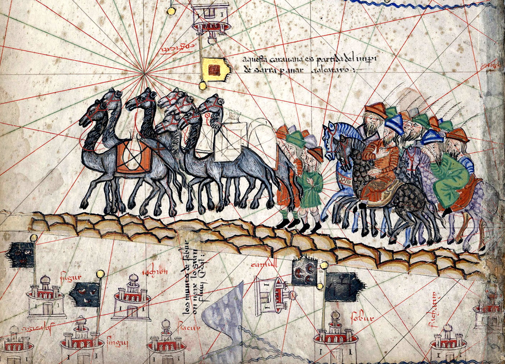
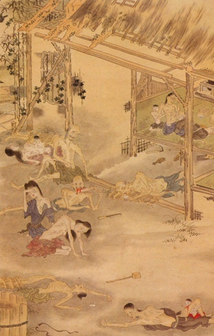
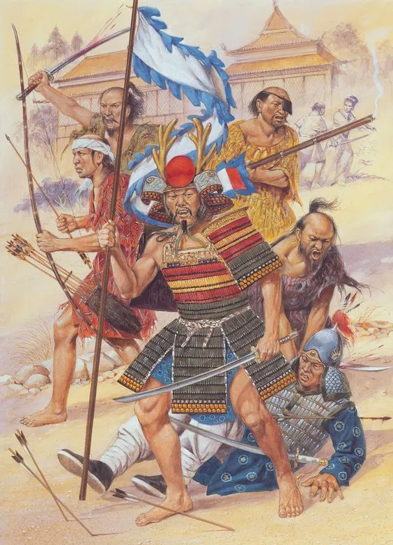
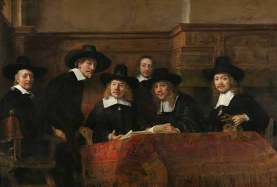
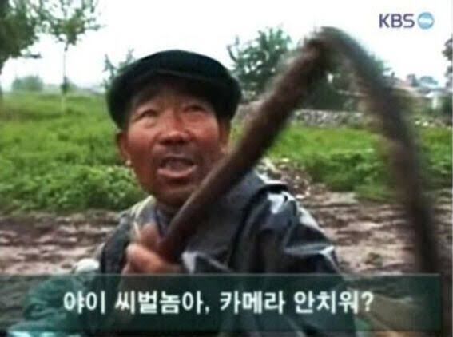
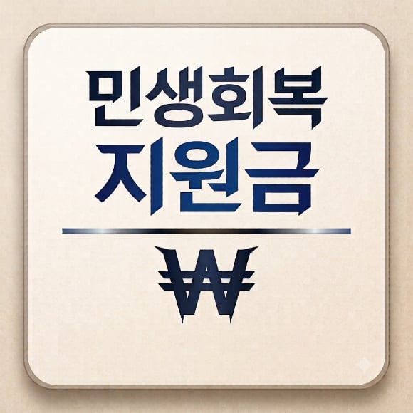

조선하면 생각나는게 대충
1. 상업 천시
2. 장인들 천시
3. 군대 천시
대충 필요한건 다 천시하고
안 좋은 것만 다 모아놓은
병신 유교국가라는 이미지가 크다.
근데 이는 사실 세계사적인 빅설사의 파도 사이에서
살아남기 위한 조선의 똥꼬쇼에 가까웠다.

1. 똥스노우볼의 시작!
실크로드 무역망의 작살 + 대륙의 혼란.
페스트로 국제 무역망(팍스 몽골리카)가 작살난다.
서역-원-고려-일본을 이어주던 국제 무역망이 씹창났다는 뜻.
또 원나라 말기에 전염병 뿐만 아니라,
기근, 홍건적의 난등 정치적 혼란이 겹치게 된다.

2. 옆나라도 똥을 싸기 시작한다!
일본의 대혼란
일본은 남북조 시대라는 극심한 내전으로 중앙 통제력 상실,
그리고 기후 악화로 자국 영토내에 흉작과 기근이 발생함.
이렇게 굶은 일본 백성들은? 왜구가 되었음.

3. 똥이 넘쳐 흘러 우리한테 까지 튄다!
14세기에 전기 왜구 등장!
이렇게 사방이 작살이 나는데 한반도는 안전할리가?
대량 발생한 왜구들이 한반도를 침략하게 됨.
고려말 한반도 남부 3도 연근해부터 도서 지역이 개작살이 남.
왜구는 왜구대로 쳐들어오고,
그거 제압하려고 부대 보내서 젊은 남성 징병해야 하는 등
한반도 전역이 황폐화됨.
4. 좆됐다!
한반도의 수출문이 닫히다.
이 때문에 고려의 부를 책임지던 무역항과 연해지방 평야들이 버려지면서
교역을 할수 있는 상황이 아니게 됨.
고려말까지 한반도에게 수많은 재화를 안겨다주던 연해지방 일대가 사라지며 조선 초기의 해양 무역이 완전 퇴보하게 된다.

5. 이제 뭐 먹고 살죠?
상업과 수공업자의 몰락
민간 상업 자체가 활기를 잃고 사라짐.
무역이 작살났는데 좆만한 내수시장을 가진 조선이 버틸리가?
이는 민간 무역의 쇠퇴 + 민간 수공업자의 몰락으로 이어짐.
고려말부터 각종 물품등을 납품해주던 소(특수행정구역所)들이 해체되었고,
길드 같은 장인 집단들이 자생하기 어려워짐.

6. 씨발, 억상농본주의 해야겠지?
물건 팔길 막히고 상업 작살난 나라가 자급자족 하려면? 바로 농업이다.
이렇게 조선은 상업을 억제하고 농업을 주력으로 삼는 국가로 발전하게 된다.
조선이 병신이여서가 아니라 선택지가 이거 밖에 없었음.
먹고 살아야 할 것 아니여.

7. 새로운 살길을 찾아서 + 나라에서 월급줍니다.
조선 건국후 초기에 북진하고 영토 개척하고 다닌 이유가
황폐해진 남쪽 지방이 회복이 안되서 이를 대처하기 위함임.
북진이 낭만 넘치고 로망이 있어서 하려고 하는게 아니라,
생존에 필요했었음.
또 전쟁하려면? 장인들이 만든 물건이 필요하긴 했으니
조선은 국가에서 일자리 잃은 장인들을 고용했음.
이때문에 중앙에서 수공업을 관리하게 됐음.
다만 국가가 수공업을 독점하다보니까 품질이 유럽,
일본 장인들처럼 뛰어나지 못했음.
시장에서 물건을 팔아 이윤을 남기는 독립적인 사업가가 아니라,
의무적으로 할당량을 채워야 하는 노동자 느낌이라고 보면 됨.
유럽, 일본처럼 제작자가 제작품에 인장을 새기긴 했으나, 브랜드, 신용, 명예의 상징이 아니라, 불량품 색출 및 처벌을 위한 행정적 낙인에 가까웠음.
----
이렇게 알고 보면 조선이 병신같은 선택을 할수 밖에 없는 이유가 있었다.
너무 조선을 욕하지 맙시다.
댓글
수집 당시 댓글 41개
란즈크네츠 · 18 시간 전
봉건제 안(못)해본 나라라 권력의 축이 조정밖에 없음 조정이 잘돌아가면 치세고 못돌아가면 나라 껍데기만 남은 권력공백임
사회복지공무원 · 21 시간 전
세계적으로500년이상유지되던왕조 자체가 거의 없었음 이것만봐도 그저 ㅄ만은아니었다는 증명한거지..
180122 · 21 시간 전
조선 초기 중기 말기로 파트를 나눠서 해야하지 않겠니? 자 다시 해오렴
김주애사진보면발기됨 · 1 시간 전
요새는 조선 전기/후기가 아니고 3등분 해놓고 연구함?
도로보 · 19 시간 전
조선 후기는 걍 지옥임
4829571 · 18 시간 전
충효 군신 중앙집권의 경험 이걸로 지금 먹고 사는거 우리뿐만 아니라 북한마저도
초코다이제 · 18 시간 전
생각해보면 신라때도 고려때도 무역 달달하게 했는데 조선이 안할 이유가 없긴 했지. 못하게 되서 그랬던건 글 보고 처음 알았네 대한제국때도 고종 순종이 못한것도 맞지만 암만봐도 이미 세도정치로 말아먹어진 나라가 극복 못하고 그대로 망했다고 생각하는대 이런거 보면 망할만 했네 내부적으로 외부적으로 괜찮은게 없네 ㅅㅂㅋㅋㅋ
칡쇼 · 17 시간 전
그런거보면 지금의 이 나라도 별반 다르지않은것같다. 어떻게든 돌아가니까 명맥을 유지한달까. 분명 개선해야할점은 한두가지가 아닐텐데
니소그 · 17 시간 전
역사에서 모든 선택은 다 자기들 입장에서 필요한 것을 택한 것이라서 신라가 당하고 동맹 맺어서 통일한 것을 욕하는 것과 비슷하지 본문에 덧붙이면 명,청은 만주까지 영향을 끼치는 기존과는 다른 중국의 통일 왕조였음 조선이 신라, 고려와는 다른 자세를 취할 수밖에 없는 이유가 여기에 있음 성리학 또한 결국 농본주의에 중심을 둔 정치/종교/사상이라서 기본적으로 그 시대 기준으로도 낡았고, 한계점이 명확하지만 그 시대에 통치 사상으로서는 매우 적합한 사상이었음 해양무역 또한 명나라라는 주먹이 가까운데 감히 반할 수가 없어서 반면 일본은 주먹이 가깝지 않으니깐...
mylovingcity · 17 시간 전
김정은도 자기가 필요한것을 택한것뿐이네?
산마르코 · 16 시간 전
그 정권 지도부들 생존에 필요한 것으로써는 맞지
니소그 · 16 시간 전
김정은이 자기에게 필요한 것을 선택한 것과(안 그런 사람이 존재하나?) 우리의 관점에서 김정은을 평가하는 것은 별개지 북한 고위층이 평가하는 것도, 북한 하층민이 평가하는 것도 별개로 존재하는 거고 거기다 김정은 현대 사람이고 조선은 전근대의 국가거든 너의 반문은 '세종대왕은 그냥 독재자 아니냐?'수준에서 벗어나지 않음
mylovingcity · 16 시간 전
김정은이 현대사람이라고해서 보편적인 현대인의 의식수준을 가지고있다고 생각하지는않는데? 전형적인 전근대 왕조국가꼴이잖아 난 세종대왕이 독재자든 아니든 상관없고 문명발전에 기여했으면 훌륭하다고 보는데 냉정하게 세종같은 몇명군들 제외한 조선왕조가 얼마나 기여했다고봄? 그런 관점에선 김정은이랑 다를거없는놈들이 한트럭이라고 생각하는데
니소그 · 15 시간 전
문명발전에 대한 기여는 어떤 식으로 따질 거지? 국가를 유지하고 후대를 잇는 건 기여가 아닌 건가? 인간 개인이 자기 삶 대신 인류문명의 기여를 사명으로 여기고 살기라도 해야하는건가? 그런 식으로는 대부분의 인간은 아무 가치가 없는데 옛날 소련은 그런 무가치한 인간들을 수용소, 전쟁터, 기타등등 '문명에 기여할 수 있게' 쓰긴 했지 개인의 행복, 기쁨, 안정, 이런 건 발전을 저해하는 요소일 뿐이잖아 마찬가지로, 조선시대의 인물들이 왜 그런 기준으로 봐야하는 거지? 그리고 조선 왕조가 북한 정권과 비교할 정도로 악랄하게 국가를 운영한 적은 없는데 김정은과 무엇을 비교해야하는거지?
mylovingcity · 5 시간 전
문명에 기여한 위인들과 자기보신에만 열중한 지도자를 구분하기 싫은거임? 후자를 김정은과 비교하는게 하면안되는일임?
선도부형 · 15 시간 전
필요한거랑 휼륭한거랑 무슨 상관이야. 넌 그 둘을 합치려고 하니까 이야기가 엇나가는 거잖아. 세종대왕이든 김정은이든 둘다 본인이 필요하다고 느낀것을 한것도 둘다 참이고 동시에 그래서 결과가 세종대왕의 평가가 높고 김정일의 평가가 낮은것도 참이야. 둘은 양립할수 있는거야. 왜 그걸 합치려는거냐 동기의 영역에서 평가를 하면 어떻하냐. 평가라는건, 과정과 결과에서 하는거지. 예를 들어 너는 배고프다는 필요함의 욕구 자체에서 좋고 나쁨을 논하냐? 그 배고프다는 욕구를 강도짓해서 채웠는지 정당하게 일한 돈을 지불해서 채운건지. 여기서 휼륭하다 아니다 라는 평가를 논해야지. 너는 지금 배고픈게 나빠 라고 말한거랑 무엇이 달라? 일단 난 그렇게 들린다.
zalda · 6 시간 전
너 멋지다 괜히 말꼬리잡는애가 단어에 집착하는건데도 예시도 훌륭하게 말해주네
mylovingcity · 5 시간 전
난 필요한거를 따질필요가 전혀없고 훌륭하다는것만 따지면 된다고 생각하는것뿐임 너가 필요한거랑 훌륭한거랑 구분하고 싶었으면 나당연합얘기,독재자 세종대왕 얘기는 왜 꺼낸거임?
인다굴 · 5 시간 전
원점으로 돌아가서 필요함의 범위가 다르잖아 병신련아. 조선이 선택한건 국가와 백성의 생존을 위해 선택한거고 북괴련들은 본인과 본인 가문만을 위해 국가 전체를 희생시키는 선택을 하잖나. 둘이 어떻게 같을수가 있는거지? 애초에 본문은 조선 초 무역로의 쇠퇴가 조선의 자급자족 사농공상의 선택을 강제했다는게 핵심인데 갑자기 김정은은 와 씨부리노 병신련아.
mylovingcity · 3 시간 전
너가 하는 해석이 다른거지 하는짓이 다르다고 생각되지는 않은데? 북한도 자기들 국가와 인민의 생존을 위해 핵무기 개발한다고하면 할말있음?
인다굴 · 3 시간 전
결과가 다르잖아 병신련아. 조선이 그쪽 방향으로 선회해서 상황이 더 나빠졌음? 조선은 그 상황내에서 최선을 다한거야 씨발. 김정은, 핵가지고 장난쳐서 지 배때기 쳐부른거 제외하고 상황이 나아진거 있음? 없잖아. 뭔 시발 해석 지랄하고 자빠졌노 개새끼야. 해석이고 지랄이고 그냥 니가 개좆소리 하는거야 씨발. 아니면 인정이나 하든가 할 줄 아는건 말꼬리 잡는거 밖에 없는 주제에 꺼져 씨발련아.
mylovingcity · 1 시간 전
그래서 무슨기준으로 최선을 다한거고 상황이 좋아졌다고 판단하는지 묻는거잖아 너갈 이걸 대답못하면 그냥 우기기밖에안됨
인다굴 · 44 분 전
.......너 이 씨발련아. 본문 안보냐. 무역망이 씹창나고 왜구가 창궐하니까 무역 포기하고 자급자족으로 돌려서 버틴거잖아........ 그래서 상업 공업을 중앙으로 돌려서 고용 유지하고 그걸로 안보 지킨 거라고 본문에 안써있냐 시발려나. 아 진짜 말꼬리 잡는거 답답해 디지겠네 시발. 모르면 모른다고 하고 다시 읽고와 시발려나. 아니면 그냥 그대로 둬서 해안가 다 씹창내고 사람들 뒤지등가 말등가 내버려둬야 했다는 말이냐 시발? 이새끼는 멀까 진짜?
대범한또라이 · 16 시간 전
후반엔 임진왜란 경신대기근 을병대기근 100만 100만 100만 죽은게 너무컸다고봄
도쿄피에스타 · 16 시간 전
진짜 마지막 경신대기근 을병대기근은 정말 타격이 컸음
아헤히오우 · 5 시간 전
ㅇㅇ 내 생각에도 이게 가장 큰 원인이라고 봄 나라구조 개혁이나 상업 군사력등 이런것도 잉여생산물의 여유가 있어야 하는 일이지. 당장 식량이 없어서 살니 죽니 한 경험이 트라우마적으로 박혀버렸고 이거 복구에만 한세월이 걸림. 그 동안 골든타임을 놓침. 실제로 경신대기근 전 효종때만 해도 나라가 개혁을 적극적으로 시도함 (대동법, 서양력 도입, 화폐경제 등)
켄트지 · 16 시간 전
고려-조선 초에 상업 망해서 나라 망하는걸 겪어버리니까 아예 상업을 교조적으로 기피한 경향도 있긴 하댔음
PGoose · 15 시간 전
개인적 추측으로는, 당대에 아시아에서 통용사용 되던 원나라 종이화폐 구실을 하던 교초?가 이미 과다 발행된 상태에서 공급망 교란으로 붕괴한게, 조선이 농업국가를 고수한 큰 동기가 아닐까 한다.
후로게이머 · 14 시간 전
당나라 어음 비전이 부도난것도 크지
모두예할때아니요함 · 14 시간 전
조선의 몰락을 이야기할때 삼정의 문란부터 시작하지않나? 갑짜기 흑사병이랑 건국초기부터 시작하면 뭐 말을 얼마나 길게하겠다는
후로게이머 · 14 시간 전
저거 한가지가 아님. 진짜 조선은 복합적으로 글러 먹었슴. 보통 국가가 기둥을 세우고 100~200년이 지나면 체계 문제가 하나씩 터지는데 그걸 바로 잡는걸 경장이라 부름. 싹다 바꾼다고 보면됨. 근데 조선은 500년이 지나서야 시도함.
제대로알고하는헤이트 · 14 시간 전
조금 끼워맞춘 것도 보이는데.. 새로운 시각도 있어서 좋긴 한데 너무 간단하게 하려다보니 조금 납득하기 힘든 부분도 있긴 하다.
알파카털파카 · 14 시간 전
님이 말한건 조선전기 이야기인데 애당초에 누가 조선 건국할떄나 조선전기 문제삼음? 중반(임란)이나 후반(영정조~망할떄까지)에 체제개혁 못한게 가장 크지 조선의 문제는 세조 성종시대나 임란 이후부터 무려 흥선대원군 시기까지. 대동법 정도를 제외하고 제대로 된 시스템 개혁을 하나도 해내지 못하고 기득권 위주로 고여서 썩고 곪아간게 가장 크다고 봄.
김춘식 · 14 시간 전
왜란 호란 연속 크리가 치명적이었지 조선초부터 성종까지는 멀쩡히 잘 굴러갔음 원글에서 조선 공예가 일본보다 뒤쳐졌다는데 오히려 반대임 전국시대 일본은 창길이 활길이 도량형 통일도 못했을때 조선은 강력한 중앙집권하에 중앙에서 자척, 메뉴얼 뿌려서 획일하게 만드는 시스템 확립함 메이드인 경상도나 메이드인 함경도나 표준규격대로 물건 만들었음 같은 시기 일본은 워낙 낙후돼서 팔게 없어 사람팔아다 조총 사왔음 은이 풍부했다는게 천운인데 그것도 조선에서 연은분리법 훔쳐다 증산 성공한거 고려불화(=세밀화) 면화재배법 연은분리법 인삼재배법 도예기술 석축축성법 죄다 일본이 조선에서 가져간거고 그거 토대로 서양이랑 교역해서 부 축적하고 서양에 지들 문화대국인양 PR함 그렇게 얻은 부로 에도 막부 300년간 낙후된 과거사 완벽하게 세탁 성공한거 에도 막부 이전까지 일본은 하까마는 커녕 맨발에 빤쓰 입고 다녔어 조선이 서양이랑 교역할까봐 조선통신사 더러 조공국 사절이라고 사다리 걷어차기까지 시전~ 결국 호란 뒤 효종때나 되어서, 일본보다 100년 늦게 서구 물문 들어옴
Yakal6 · 12 시간 전
욕먹어도 싼게, 그 필요악이던 좆망테크트리를 위기가 벗어나면 갈아타야했는데 계속 유지했으니깐 문제지
아헤히오우 · 6 시간 전
억상에는 상업을 늘릴려고 해도 팔 시장이 없다는것도 큰 몫함 일본은 내전으로 개판 중국은 해금령으로 바다를 잠가버려서 민간시장이 뭐를 할 수가 없었음
불멸의러너 · 5 시간 전
고려때 은으로 신용붕괴 일어난것도 한몫함
SeinundZeit · 5 시간 전
합리적으로, 이유가 있고 필요한 일만 하면 국가가 어떻게 망하는지 보여주는 사례가 조선이지. '도대체 정사각형의 빗변과 대각선의 길이의 비가 루트 2라는 것을 알아서 삶에 무슨 쓸모가 있단 말이냐'가 유교가 가지는 근본적인 질문이었다고. 그렇게 쓸모있는 일만 했던 결과가 전기에서 후기로 가면 갈수록 있던 것도 지키지 못하는 병신이 되어버린거고.
개붕야호 · 3 시간 전
ㅋㅋㅋㅋ그 왜구땜에 십창난건 고려말 조선초기인데 중~후기까지 계속 그 정책을유지하니깐 욕먹는거지ㅋㅋㅋ
jcjc · 2 시간 전
14세기 전기왜구등장이면 그때부터 피카츄가 있었던거냐?
양식소고기 · 1 시간 전
참고로 근대화는 혁명에 가까울 정도로 나라가 변해야 하고, 근대화를 잘해도 열강이 식민지빔 쏘면 식민지 당하는 거 일본은 미국의 남북 전쟁, 영국과 러시아의 그레이트 게임, 청나라의 어그로, 제국주의 이전부터 서구와 접촉이 있어서 그나마 국제 정세를 이해 했고 그 덕에 근대화를 성공하고, 제국주의 막차를 탄 거임 그 과정에서 무장 반란이 일어나고, 내전을 몇 번 이나 했음